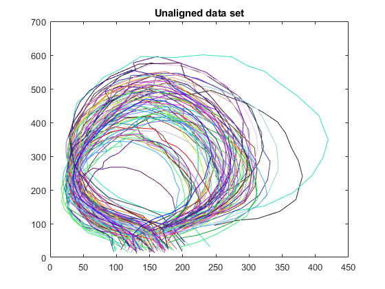
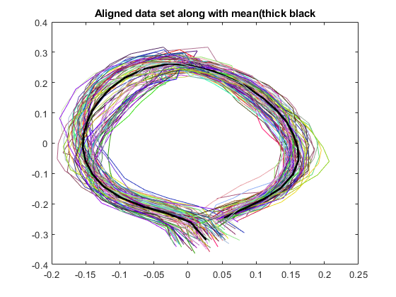
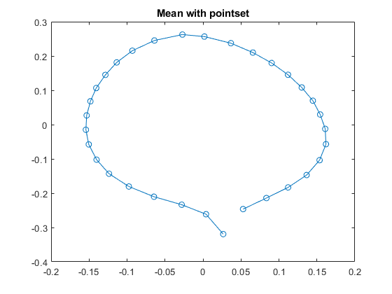
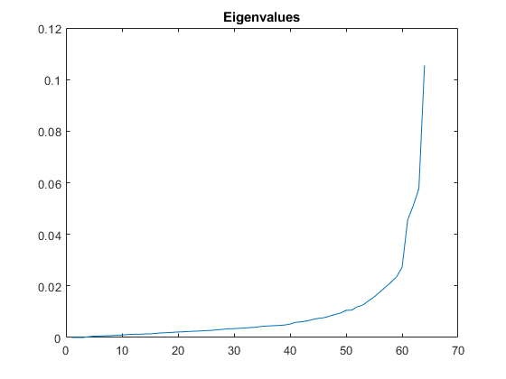
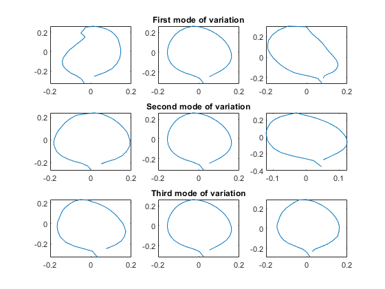
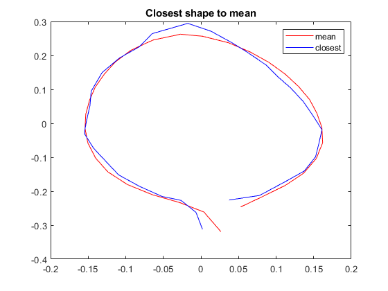
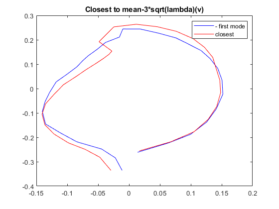
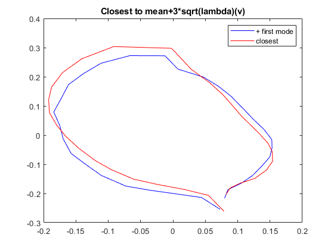

load('pointset.mat')
figure(1);
title('Unaligned data set');
for i=1:75
plot(pointset(1,:,i) , pointset(2,:,i) , 'color' , [rand rand rand]);
title('Unaligned data set');
hold on;
end
mean_ = mean_leaf_finder(pointset);
aligned_pt_set1 = zeros(2,32,75);
for i=1:75
pt_set1 = mean_;
pt_set2 = pointset(:,:,i)';
aligned_pt_set1(:,:,i) = align_leaf_pointset(pt_set1 , pt_set2)';
end
figure(2);
title('Aligned data set along with mean(thick black');
distance = zeros(75,1);
for i=1:75
p = plot(mean_(:,1) , mean_(:,2) , 'color','black');
p(1).LineWidth = 2;
hold on;
plot(aligned_pt_set1(1,:,i) , aligned_pt_set1(2,:,i) , 'color' , [rand rand rand])
distance(i) = norm(aligned_pt_set1(:,:,i) - mean_');
end
title('Aligned data set along with mean(thick black');
figure(3);
plot(mean_(:,1) , mean_(:,2),'-o') ;
title('Mean with pointset');
mean_flattened = reshape(mean_ , 32*2 , 1) ;
[eigen_vectors, eigen_values] = modes_leaf_finder(mean_flattened,mean_,pointset);
prev_mode = mean_flattened - 3*eigen_values(64)*eigen_vectors(:,64);
next_mode = mean_flattened + 3*eigen_values(64)*eigen_vectors(:,64);
figure(4);
plot(real(eigen_values));
title('Eigenvalues');
prev_mode = reshape(prev_mode , 32,2);
next_mode = reshape(next_mode , 32,2);
prev_mode = align_leaf_pointset(mean_,prev_mode);
next_mode = align_leaf_pointset(mean_,next_mode);
hold on;
figure(5);
subplot(3,3,2);
plot(mean_(:,1) , mean_(:,2));
title('First mode of variation');
subplot(3,3,1);
plot(prev_mode(:,1),prev_mode(:,2));
subplot(3,3,3);
plot(next_mode(:,1),next_mode(:,2));
prev_mode_2 = mean_flattened - 3*eigen_values(63)*eigen_vectors(:,63);
next_mode_2 = mean_flattened + 3*eigen_values(63)*eigen_vectors(:,63);
prev_mode_2 = reshape(prev_mode_2 , 32,2);
next_mode_2 = reshape(next_mode_2 , 32,2);
prev_mode_2 = align_leaf_pointset(mean_,prev_mode_2);
next_mode_2 = align_leaf_pointset(mean_,next_mode_2);
subplot(3,3,5);
plot(mean_(:,1) , mean_(:,2));
title('Second mode of variation')
subplot(3,3,4);
plot(prev_mode_2(:,1),prev_mode_2(:,2));
subplot(3,3,6);
plot(next_mode_2(:,1),next_mode_2(:,2));
prev_mode_3 = mean_flattened - 3*eigen_values(62)*eigen_vectors(:,62);
next_mode_3 = mean_flattened + 3*eigen_values(62)*eigen_vectors(:,62);
prev_mode_3 = reshape(prev_mode_3 , 32,2);
next_mode_3 = reshape(next_mode_3 , 32,2);
prev_mode_3 = align_leaf_pointset(mean_,prev_mode_3);
next_mode_3 = align_leaf_pointset(mean_,next_mode_3);
subplot(3,3,8);
plot(mean_(:,1) , mean_(:,2));
title('Third mode of variation')
subplot(3,3,7);
plot(prev_mode_3(:,1),prev_mode_3(:,2));
subplot(3,3,9);
plot(next_mode_3(:,1),next_mode_3(:,2));
figure(6);
[M,I] = min(distance);
plot(mean_(:,1),mean_(:,2),'color','red');
hold on;
plot(aligned_pt_set1(1,:,I) , aligned_pt_set1(2,:,I),'color','blue');
legend('mean','closest');
title('Closest shape to mean');
distance2 = zeros(40,1);
distance3 = zeros(40,1);
for i=1:75
distance2(i) = norm(prev_mode - align_leaf_pointset(prev_mode,pointset(:,:,i)'));
distance3(i) = norm(next_mode - align_leaf_pointset(next_mode , pointset(:,:,i)'));
end
[M2 , i2] = min(distance2);
[M3 , i3] = min(distance3);
figure(9);
A = align_leaf_pointset(prev_mode,pointset(:,:,i2)');
B = align_leaf_pointset(next_mode , pointset(:,:,i3)');
plot(A(:,1) , A(:,2),'color','blue');
hold on;
plot(prev_mode(:,1),prev_mode(:,2),'color','red');
title('Closest to mean-3*sqrt(lambda)(v)');
legend('- first mode','closest');
figure(10);
plot(B(:,1) , B(:,2),'color','blue');
hold on;
plot(next_mode(:,1) , next_mode(:,2),'color','red');
title('Closest to mean+3*sqrt(lambda)(v)');
legend('+ first mode','closest')
1.9103e+03
0.0014
1.3687e-05
1.3785e-07
1.3932e-09
1.4092e-11
1.4260e-13
1.4238e-15
2.9451e-16
2.6971e-16
2.2059e-16
2.2871e-16
2.4904e-16
2.1221e-16
2.2136e-16
       